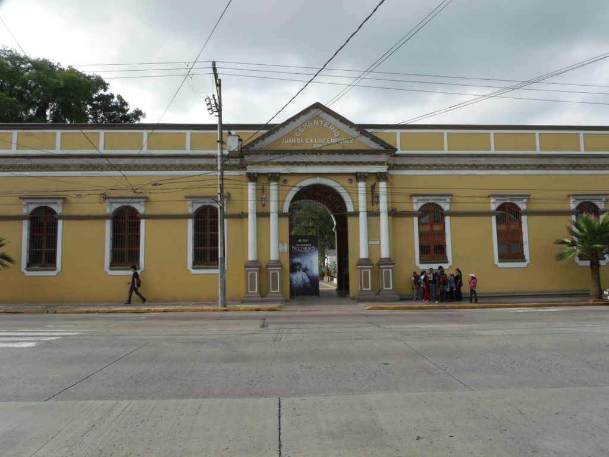

A continucación se presentan los lugares...
| Imagén del lugar | Descripción de la zona | Horario |
|---|---|---|
Ex convento de San José
|
descripcionEl Ex Convento de San José de Gracia, ubicado en Orizaba, Veracruz, es una destacada construcción históricaque data del siglo XIX. Su edificación comenzó en 1803 y concluyó en 1828, siendo uno de los últimos conventos erigidos en México durante ese siglo y el más grande del estado de Veracruz. |
11:00 a. m. 6:00 p. m. |
Romanchu |
DescripciónSus paredes guardan recuerdos de comensales y huéspedes que hace años tuvieron la oportunidad de disfrutar del“Romanchu”, hoy los orizabeños narran que al pasar por el inmueble abandonado a altas horas de la noche, gritos y ruidos extraños emanan del interior, por ello, investigadores paranormales acudieron al sitio a buscar lo que denominaron “La Mujer y la Sombra”. Roció Guevara, es investigadora de lo paranormal, relató le fue dicho que en el lugar se manifiestan situaciones fuera de este mundo terrenal donde una mujer y una sombra oscura de más de 2 metros son el centro de curiosidad, ruidos y espanto |
9:00 A. M. - 11:00 P. M. |
Panteon Municipal de Orizaba |
LeyendaLa historia se remonta a 1908, cuando una pareja llegó a Orizaba junto con su pequeña hija de tan sólo 2 años de edad, llamadaAna María Dolores Segura y Couto. Desafortunadamente, la niña se enfermó y finalmente perdió la vida debido a un accidente en el que se cayó y se fracturó la cabeza. Los padres decidieron enterrarla en el cementerio "Juan de la Luz Enríquez", pero como debían regresar a la Ciudad de México, encargaron al afamado escultor Runaldo Cuagnilli la construcción de un monumento en honor a su hija. El encargo consistió en una estatua de tamaño natural hecha de mármol de Carrara, que representaba a la pequeña acostada en su cama, mientras un ángel la cuidaba. Se cuenta que durante la noche, la niña camina entre las tumbas en busca de sus padres, siempre acompañada por el ángel. Algunos afirman que la niña concede deseos a aquellos que la visitan y que, cuando estos se cumplen, algún niño de la familia debe llevarle un juguete o una flor como agradecimiento. |
8:00 A. M. - 6:00 P. M. |